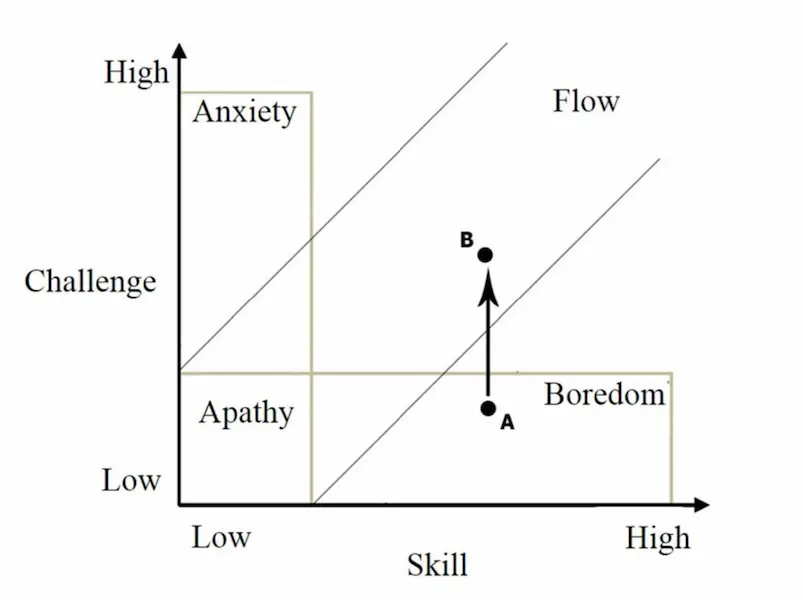
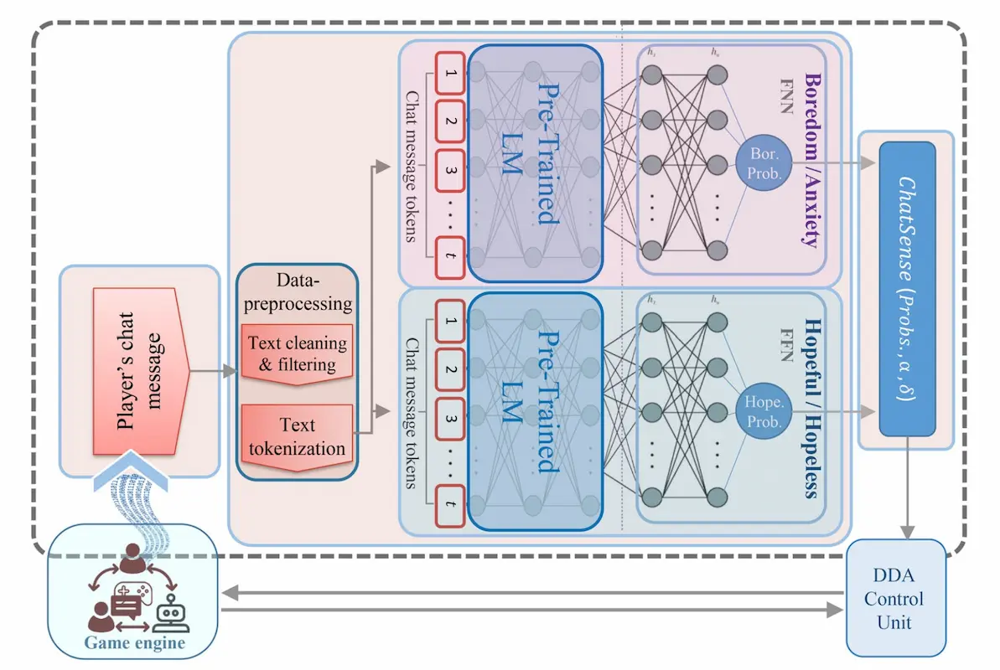

A Two-Dimensional Affective Approach for Dynamic Difficulty Adjustment Based on Player Chat Analysis
Maintaining the perfect balance between challenge and player skill is a cornerstone of great game design. In my latest paper, we introduce an innovative method to dynamically adjust game difficulty by reading between the lines of what players say to each other.
The Challenge of Traditional DDA
Dynamic Difficulty Adjustment (DDA) systems traditionally rely on physiological recording devices (like EEG or heart-rate monitors) to detect a player's emotional state. While effective, these methods are invasive, expensive, and largely inaccessible for the general gaming public. Other approaches rely on genre-specific mechanics or interruptive questionnaires. We sought a cost-effective, genre-agnostic alternative.
Our Proposed Solution: Analyzing Chat with AI
Using advanced Natural Language Processing (NLP), we designed a framework that analyzes in-game chat to infer players' perceived game difficulty. Building upon Flow theory, we focused on evaluating player emotions across two distinct dimensions:
- Hope & Frustration: Does the player expect to win, or do they feel defeated?
- Anxiety & Boredom: Is the challenge overwhelming, or is the game moving too slowly?

Methodology & Results
We curated and annotated two massive datasets based on actual player interactions in Dota 2. We fine-tuned the Twitter-RoBERTa-base language model, which is exceptionally well-suited for informal, slang-heavy online communication.
Our novel algorithm triggers difficulty adjustments only when specific emotional combinations are detected (e.g., increasing difficulty when high hope and high boredom coincide). This reduces false positives and ensures accurate adjustments.
The Results: The models achieved phenomenal accuracy rates of over 97% in identifying hope/frustration and over 98% for anxiety/boredom, with negligible inference latency (around 2.3 milliseconds per message). This proves that real-time, affect-driven DDA using text chat is not only highly accurate but also highly scalable for mass-market games.

Read the Full Paper
If you are interested in the technical details, the algorithms, or the comprehensive dataset evaluations, you can access the full paper through Taylor & Francis at the link below:
Read the Article on IJHCI